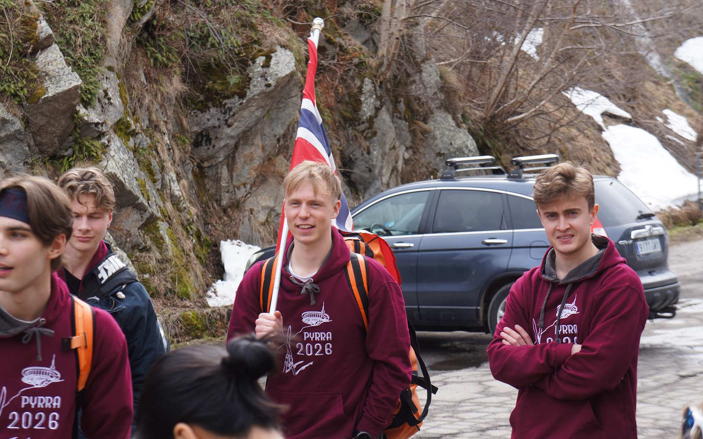
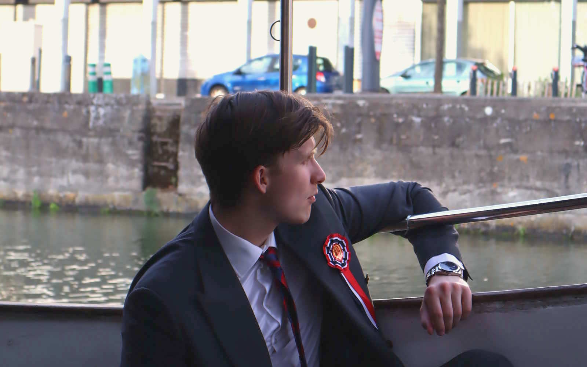
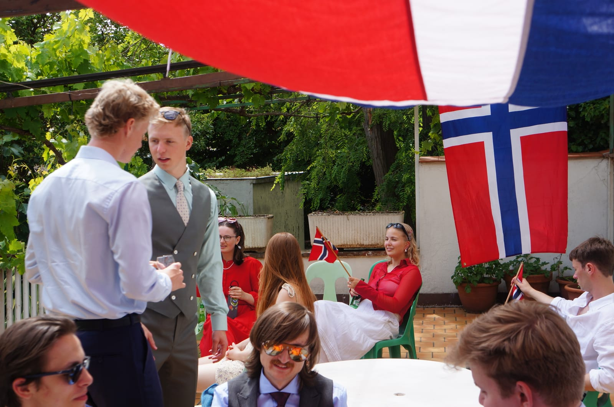
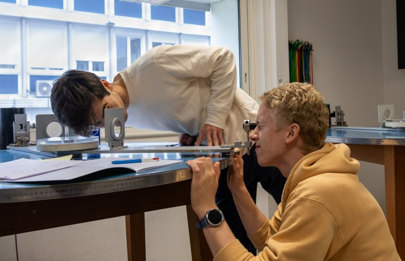
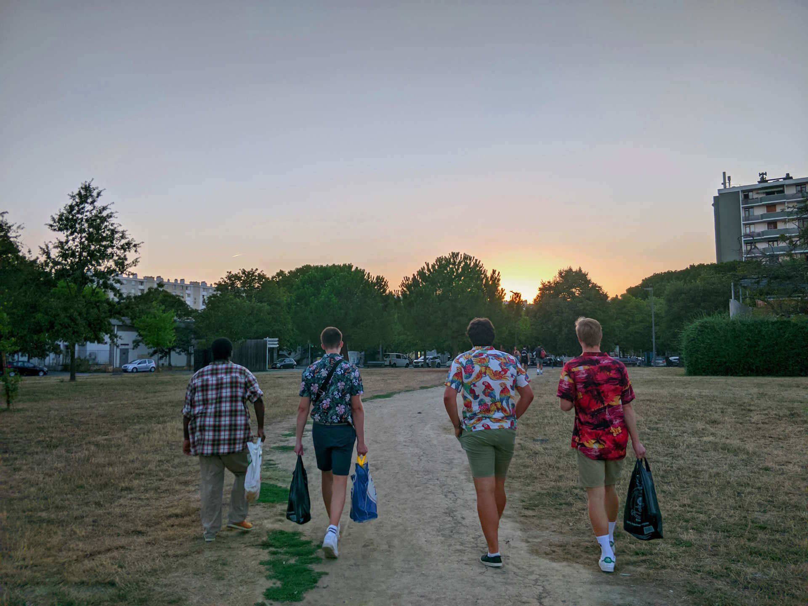

Komme seg på flyet til Toulouse 101
Fordi man ikke søker via Samordna Opptak kan prosessen virke litt vanskelig. Men det er den altså ikke: her har du alt du trenger å vite.
OBS! Dobbeltsjekk alt av krav og frister med utdanning.no
~15. april
Søknadsfrist
R2 + Fysikk 1
Realfagskrav
Har du under 5 i matte eller fysikk, fordres et anbefalingsbrev fra faglærer. Fysikk 2 er anbefalt, men ikke noe krav, og går du IB eller fransk BAC gjelder egne varianter av realfagskravet. Det er ikke noe fast karaktersnitt, men du bør ligge over middels i realfagene - resten avgjøres av fagkombinasjon og intervju, og der teller motivasjonen din mye.
Frist ~15. april
Søknaden går gjennom utdanning.no sine sider og søknadsportalen Espresso. Går du på VG3 nå, legger du ved karakterutskrift fra VG1 og VG2 sammen med terminkarakterene fra VG3. Er du ferdig med videregående, er det vitnemålet som gjelder. Og merk deg én ting: du kan ikke søke NORGINSA og ordinært fransk opptak samme år - det er enten eller.
Vedleggene kan være på norsk, engelsk eller fransk. Den fullstendige lista ligger hos utdanning.no.

Begynnelsen av mai
Etter fristen blir søkerne som ligger best an kalt inn til intervju - i Oslo, Bergen eller digitalt, og på engelsk eller fransk etter ønske. Her møter du et par av professorene dine, som er nysgjerrige på din karakter og din motivasjon. Eneste du burde forberede deg på er hvorfor du ønsker å studere i Frankrike, og om du takler å gjøre feil underveis. Man skal jo tross alt studere på et nytt språk!

Begynnelsen av mai
Rundt samme tid som intervju holder skolen et informasjonsmøte med praktisk informasjon. Eldre NORGINSA-studenter pleier også å være med for å fortelle om studielivet.

Mai eller juni
Svaret kommer i mai eller juni. Det er fagkombinasjon, karakterer og intervju som vurderes samlet - det finnes ikke noe fast karaktersnitt, men du må ligge over middels i realfagene. Erfaringen vår at de fleste motiverte søkere får tilbud om plass. Takker du ja, gjør du det ved å bekrefte tilbudet og betale et depositum. Skolen sender mye informasjon og hjelper deg med det administrative. Det er likevel viktig å ta tunga rett i munn når det kommer til alle dokumentene! Den norske klassen blir tildelt et par eldre NORGINSA-studenter som "faddere", som ofte lager en felles gruppechat og støtter dere underveis.

Slutten av juli til august
Trenger du et ekstra forkurs i fransk, får du det på nett i slutten av juli. Det obligatoriske intensivkurset begynner i andre eller tredje uka i august og varer en måned. I løpet av disse ukene kommer de eldre studentene også tilbake fra sommerferie, som kommer til å ville vise dere byen. Intensivkurset gir i tillegg rett til språkstipend fra Lånekassen.

Målstreken!
Når intensivkurset er ferdig i starten av september starter den franske fadderuka. Her skjer det mange aktiviteter, og du blir bedre kjent med både de norske og andre franske på trinnet. Etter dette begynner de første skoletimene deres, hvor dere får en myk start.
Penger, bolig og godkjenning av graden er svart ut i FAQ-en på «Om programmet». Hvis det er noe annet er det bare å sende oss en melding!